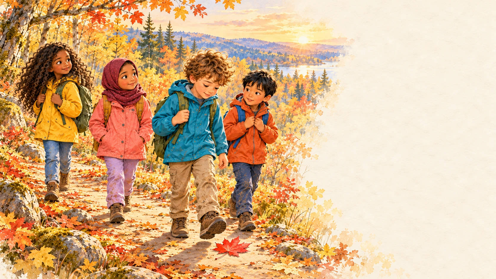

Herfst in het bos
Een verhaal met meester Bob

Herfst in het bos · Ons lesdoel
Ik kan optellen tot 20 met een brug over 10.
Eerst 10 maken.
Dan de rest erbij.
Het verhaal wordt klaargezet…
Het bos wordt geopend…

We zijn weer aan de bosrand
Kun jij de brug maken?
Optellen tot 20 met een brug over 10.
8 + 4 = ?
4 = 2 + 28 + 2 = 10
10 + 2 = 12
Hoe splits je 4 om eerst 10 te maken?
Denk eerst zelf. Vertel daarna je aanpak.
Brug over 10
Het rekenscherm wordt geopend…
Samen tellen
Tik op de bladzijde om verder te lezen